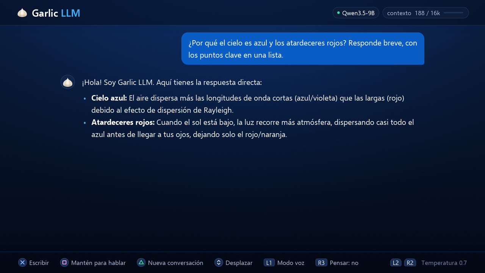

Chat de texto
El modelo 9B responde a 31–39 tokens por segundo, y hasta 43 cuando escribe código. Lo logra con decodificación especulativa (MTP) y kernels propios de 4 bits. La ventana de contexto es de 16K tokens.
Este párrafo llega a 35 tokens por segundo, el punto medio del rango medido en la consola. Cada trozo es un token: una palabra, parte de una palabra o un signo de puntuación. Una respuesta corta de 60 tokens está en pantalla en menos de dos segundos. Una respuesta completa de 300 tokens tarda menos de nueve segundos. Dieciséis mil tokens, el tamaño de la ventana de contexto, tardarían cerca de ocho minutos. El código sale un poco más rápido, hasta 43 tokens por segundo. Nada de este recuadro es salida del modelo; solo muestra el ritmo.
